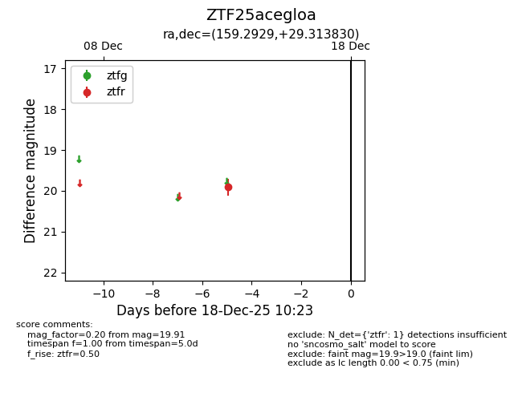
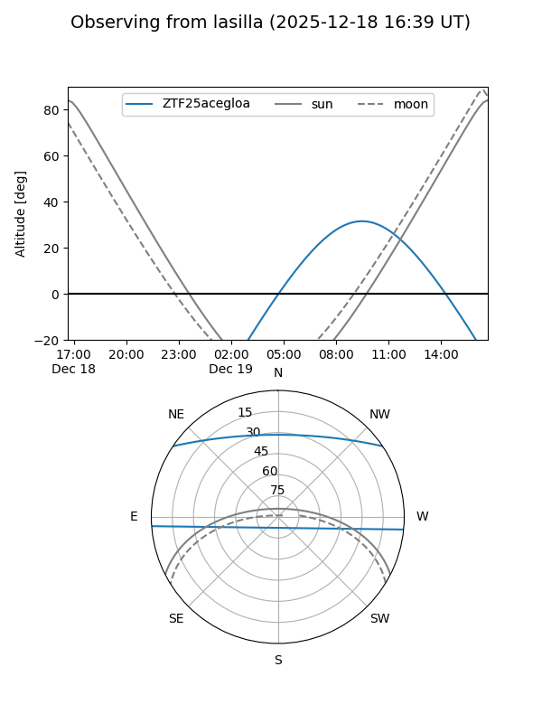
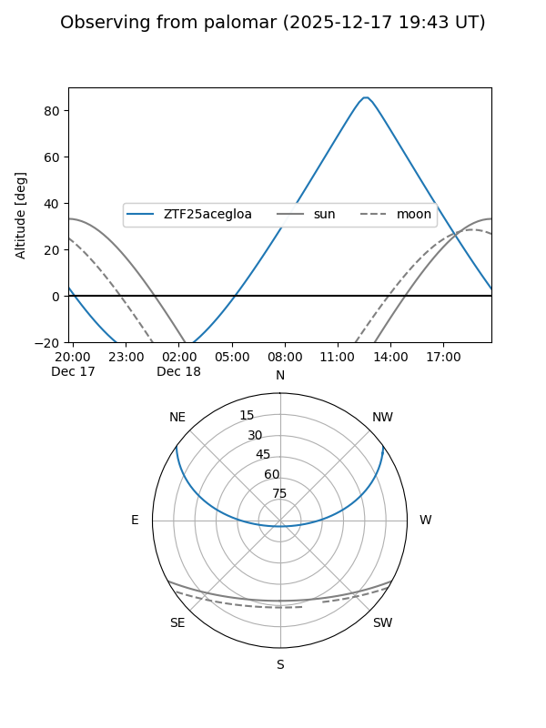

ZTF25acegloa
Target ZTF25acegloa at 2025-12-18 11:18
Aliases and brokers:
FINK: fink-portal.org/ZTF25acegloa
Lasair: lasair-ztf.lsst.ac.uk/objects/ZTF25acegloa
ALeRCE: alerce.online/object/ZTF25acegloa
alt names
ZTF25acegloa (ztf,fink_ztf)
Coordinates:
equatorial (ra, dec) = 159.2929,+29.31383
equatorial (HMS+DMS) = 10:37:10.30,+29:18:49.79
galactic (l, b) = (200.7089,+60.44303)
Photometry
last ztfr=19.91
1 ztfr detections
Lightcurve

Visibility


Additional plots